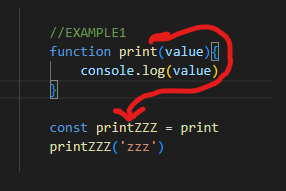

Call Back page
-
function is like object, you can pass parameters to variable and make it behave like function (see code Example 1 - 2)
 -
CALLBACK passing function to other function. (see code Example 3.1 - 3.4)
- useCallback2 initializes with argument Anonymous function
- anyFunc becomes equal Anonymous function functionality
- anyFunc initializes with argument "Albert"
- anyFunc (following Anonymous functionality) fills name with "Albert" argument
- anyFunc console.logs "Albert"